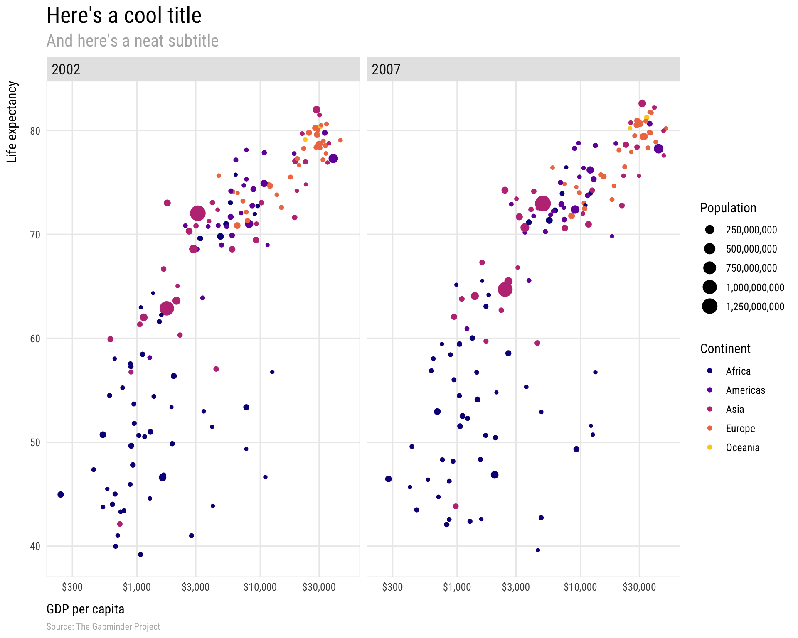
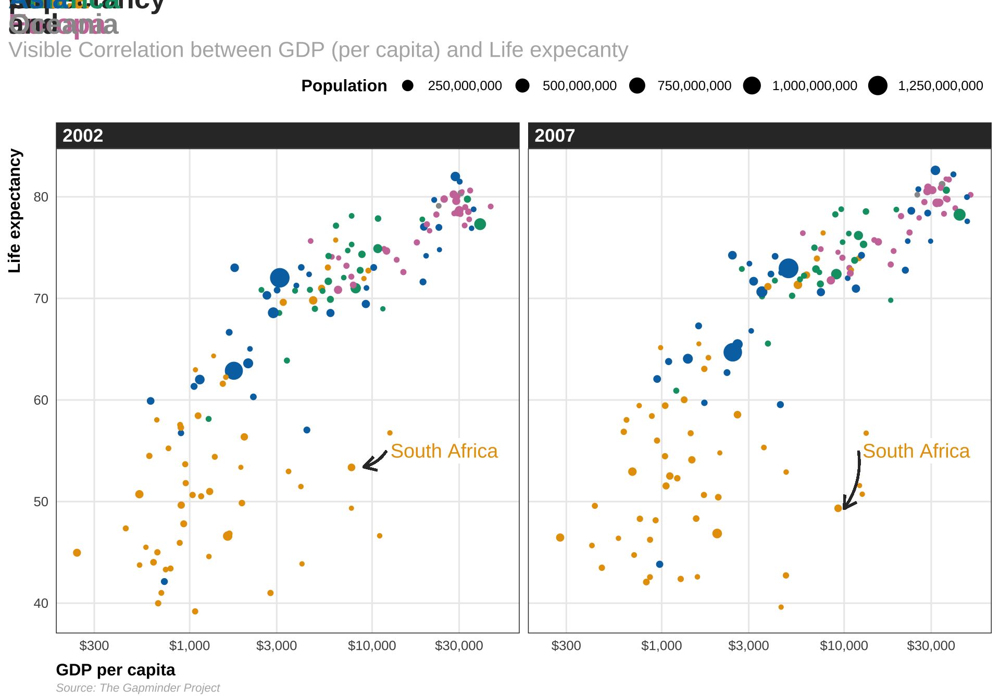

knitr::opts_chunk$set(fig.width=15, fig.height=8)library(tidyverse)# For ggplot, dplyr, and friendslibrary(gapminder)# For gapminder datalibrary(scales)# For nice axis labelsgapminder_filtered<-gapminder%>%filter(year>2000)base_plot<-ggplot(data =gapminder_filtered, mapping =aes(x =gdpPercap, y =lifeExp, color =continent, size =pop))+geom_point()+# Use dollars, and get rid of the cents part (i.e. $300 instead of $300.00)scale_x_log10(labels =dollar_format(accuracy =1))+# Format with commasscale_size_continuous(labels =comma)+# Use viridisscale_color_viridis_d(option ="plasma", end =0.9)+labs(x ="GDP per capita", y ="Life expectancy", color ="Continent", size ="Population", title ="Here's a cool title", subtitle ="And here's a neat subtitle", caption ="Source: The Gapminder Project")+facet_wrap(vars(year))
Create and save theme (my_pretty_theme)
Code
windowsFonts(`Roboto Condensed` =windowsFont("Roboto Condensed"))my_pretty_theme<-theme_minimal(base_family ="Roboto Condensed", base_size =12)+theme(panel.grid.minor =element_blank(),# Bold, bigger title plot.title =element_text(face ="bold", size =rel(1.7)),# Plain, slightly bigger subtitle that is grey plot.subtitle =element_text(face ="plain", size =rel(1.3), color ="grey70"),# Italic, smaller, grey caption that is left-aligned plot.caption =element_text(face ="italic", size =rel(0.7), color ="grey70", hjust =0),# Bold legend titles legend.title =element_text(face ="bold"),# Bold, slightly larger facet titles that are left-aligned for the sake of repetition strip.text =element_text(face ="bold", size =rel(1.1), hjust =0),# Bold axis titles axis.title =element_text(face ="bold"),# Add some space above the x-axis title and make it left-aligned axis.title.x =element_text(margin =margin(t =10), hjust =0),# Add some space to the right of the y-axis title and make it top-aligned axis.title.y =element_text(margin =margin(r =10), hjust =1),# Add a light grey background to the facet titles, with no borders strip.background =element_rect(fill ="grey90", color =NA),# Add a thin grey border around all the plots to tie in the facet titles panel.border =element_rect(color ="grey90", fill =NA))
Code
base_plot+my_pretty_theme

Example 2: BBC News data team style
https://bbc.github.io/rcookbook/
Code
#This line of code installs the pacman page if you do not have it installed - if you do, it simply loads the packageif(!require(pacman))install.packages("pacman")pacman::p_load('dplyr', 'tidyr', 'gapminder','ggplot2', 'ggalt','forcats', 'R.utils', 'png', 'grid', 'ggpubr', 'scales','bbplot')#install.packages('devtools')#devtools::install_github('bbc/bbplot')library(bbplot)
Code
knitr::opts_chunk$set(fig.width=12, fig.height=8)#Prepare datamultiple_line_df<-gapminder%>%filter(country=="China"|country=="United States")#Make plotmultiple_line<-ggplot(multiple_line_df, aes(x =year, y =lifeExp, colour =country))+geom_line(size =2)+geom_hline(yintercept =0, size =1, colour="#333333")+scale_colour_manual(values =c("#FAAB18", "#1380A1"))+bbc_style()+labs(title="Living longer", subtitle ="Life expectancy in China and the US")multiple_line

Add annotation
Code
multiple_line<-multiple_line+geom_label(aes(x =1980, y =45, label ="I'm quite a long\nannotation over\nthree rows"), hjust =0, vjust =0.5, lineheight =0.8, colour ="#555555", fill ="white", label.size =NA, family="Helvetica", size =6)multiple_line
Add legend to lines
Code
knitr::opts_chunk$set(fig.width=12, fig.height=8)multiple_line<-multiple_line+theme(legend.position ="none")+xlim(c(1950, 2011))+geom_label(aes(x =2007, y =79, label ="US"), hjust =0, vjust =0.5, colour ="#1380A1", fill ="white", label.size =NA, family="Helvetica", size =6)+geom_label(aes(x =2007, y =72, label ="China"), hjust =0, vjust =0.5, colour ="#FAAB18", fill ="white", label.size =NA, family="Helvetica", size =6)multiple_line
library(tidyverse)library(gghighlight)library(thematic)library(ggtext)df<-read.csv("time.csv")df_c<-df|>select(Year,alone =contains("alone"),coworkers =contains("coworker"), parents =contains("parents"), children =contains("children"), friends =contains("friends"))%>%pivot_longer( cols =alone:friends, names_to ='person', values_to ='minutes')colors<-thematic::okabe_ito(2)title_text<-glue::glue('Around the age of 40, we spend less time with <span style = "color:{colors[2]}">**children**</span><br>and more time <span style = "color:{colors[1]}">**alone**</span>')# plotdf_c|>ggplot(aes(x =Year, y =minutes, color =person))+geom_line(linewidth =1.5)+labs(title ='Time with others as we get older')+theme_minimal( base_size =24, base_family ='Source Sans Pro')+labs( x ='Age', y =element_blank(), title =title_text, subtitle ='Daily time spent with others (in minutes)', caption ='Data: Our World in Data')+gghighlight(person%in%c('alone', 'children'), Year>=38, use_direct_label =F, use_group_by =FALSE, unhighlighted_params =list(color ='grey80', linewidth =1))+annotate('text', x =80, y =c(425, 85), size =8, label =c('alone', 'children'), family ='Source Sans Pro', fontface ='bold', hjust =1, color =thematic::okabe_ito(2))+annotate('segment', x =38, xend =38, y =0, yend =275, linetype =2, linewidth =1, color ='grey10')+scale_color_manual(values =thematic::okabe_ito(2))+theme( legend.position ='none', panel.grid.minor =element_blank(), panel.grid.major =element_line(linewidth =0.5, linetype =2, color ='grey85'), plot.title.position ='plot', text =element_text(color ='grey20'), axis.text =element_text(color ='grey40'), plot.title =ggtext::element_markdown( color ='grey20', family ='Merriweather'), plot.subtitle =element_text( color ='grey30', size =rel(0.8), margin =margin(b =8, unit ='mm')), plot.caption =element_text(size =rel(0.6), color ='grey20'))